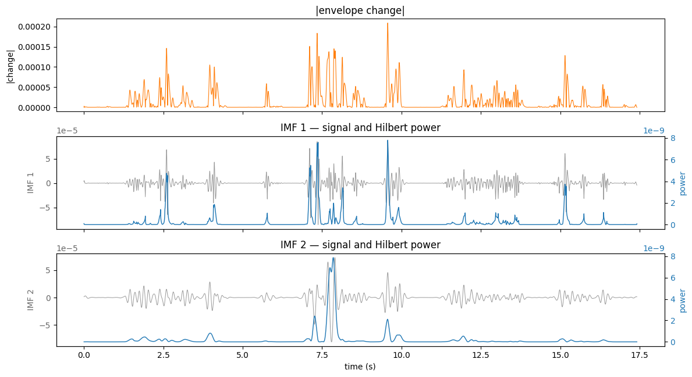
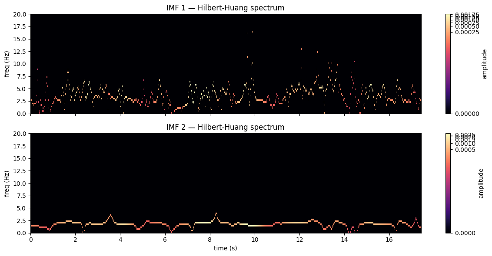

import os, glob
import numpy as np
import pandas as pd
import matplotlib.pyplot as plt
from scipy.io import wavfile # simple WAV reader, no extra install
import emd # empirical mode decompositionEnvelope + pyEMD demo
A small standalone look at one trial:
- the amplitude envelope drawn over the audio waveform
- the envelope change (signed), then its absolute value
- IMF 1 and IMF 2 of the envelope
- IMF 1 and IMF 2 of the envelope change
See the documentation folder where this script is located for more details on the EMD algorithm.
It loads one audio file and its matching env_*.csv (which already has the envelope column), derives the change here, and runs EMD on both. Each step prints the object it produced before plotting it.
Pick one example (audio + its envelope)
By default this takes the first .wav in AUDIO_DIR and the env_*.csv whose name contains the same stem. If the auto-match misses, set AUDIO_FILE and ENV_FILE by hand.
AUDIO_DIR = '../../audios/103_203' # folder of .wav files for this pair
ENV_DIR = '../../TS_acoustics' # folder of env_*.csv files
AUDIO_FILE = None # or a full path to one .wav
ENV_FILE = None # or a full path to one env_*.csv
audio_path = AUDIO_FILE or sorted(glob.glob(os.path.join(AUDIO_DIR, '*.wav')))[0]
stem = os.path.splitext(os.path.basename(audio_path))[0]
if ENV_FILE:
env_path = ENV_FILE
else:
hits = sorted(glob.glob(os.path.join(ENV_DIR, f'env_{stem}*.csv')))
assert hits, f"No env_*.csv matching stem '{stem}' in {ENV_DIR}. Set ENV_FILE by hand."
env_path = hits[0]
print('audio file:', audio_path)
print('env file :', env_path)audio file: ../../audios/103_203\103_203_12_1_20250113_152455_doughnut_board.wav
env file : ../../TS_acoustics\env_103_203_12_1_20250113_152455_doughnut_board.wav_norm.csv# audio waveform
# scipy reads standard PCM WAV. If your files are 24-bit or mp3, use librosa
# instead: wav, sr = librosa.load(audio_path, sr=None)
sr, data = wavfile.read(audio_path)
data = data.astype(float)
if data.ndim > 1: # stereo -> mono
data = data.mean(axis=1)
peak = np.max(np.abs(data))
wav = data / peak if peak else data # normalise to [-1, 1] for display
t_wav = np.arange(len(wav)) / sr
print('audio :', type(wav).__name__, '| shape', wav.shape, '| dtype', wav.dtype,
'| sr', sr, 'Hz | duration', round(len(wav)/sr, 2), 's')
# envelope (already computed, in the env csv)
env = pd.read_csv(env_path)
print('\nenv csv:', env.shape, '| columns:', list(env.columns))
print(env.dtypes)
envelope = env['envelope'].to_numpy()
t_env = env['time'].to_numpy().astype(float)
if np.median(np.diff(t_env)) > 0.5: # time looks like milliseconds -> seconds
t_env = t_env / 1000.0
print('\nenvelope:', envelope.shape, envelope.dtype,
'| range', round(float(envelope.min()), 4), 'to', round(float(envelope.max()), 4),
'| ~', round(1 / np.median(np.diff(t_env))), 'Hz')
env.head()audio : ndarray | shape (768000,) | dtype float64 | sr 44100 Hz | duration 17.41 s
env csv: (8708, 6) | columns: ['time', 'audio', 'envelope', 'filename', 'envelope_norm', 'envelope_change']
time float64
audio float64
envelope float64
filename object
envelope_norm float64
envelope_change float64
dtype: object
envelope: (8708,) float64 | range -0.0001 to 0.0072 | ~ 500 Hz| time | audio | envelope | filename | envelope_norm | envelope_change | |
|---|---|---|---|---|---|---|
| 0 | 0.0 | 0.000000 | 0.000031 | 103_203_12_1_20250113_152455_doughnut_board.wav | 0.028613 | -0.000055 |
| 1 | 2.0 | 0.000000 | 0.000034 | 103_203_12_1_20250113_152455_doughnut_board.wav | 0.028897 | 0.000008 |
| 2 | 4.0 | -0.000119 | 0.000037 | 103_203_12_1_20250113_152455_doughnut_board.wav | 0.029175 | 0.000069 |
| 3 | 6.0 | -0.000204 | 0.000039 | 103_203_12_1_20250113_152455_doughnut_board.wav | 0.029442 | 0.000127 |
| 4 | 8.0 | -0.000031 | 0.000042 | 103_203_12_1_20250113_152455_doughnut_board.wav | 0.029693 | 0.000180 |
1. Envelope over the audio waveform
The waveform is the raw audio; the envelope is its slow amplitude outline. They share a time axis (seconds), plotted on twin y-axes because their scales differ.
fig, ax = plt.subplots(figsize=(12, 3.5))
ax.plot(t_wav, wav, color='0.7', lw=0.4)
ax.set_xlabel('time (s)'); ax.set_ylabel('waveform (normalised)')
ax2 = ax.twinx()
ax2.plot(t_env, envelope, color='C3', lw=1.3)
ax2.set_ylabel('envelope', color='C3'); ax2.tick_params(axis='y', labelcolor='C3')
ax.set_title('Amplitude envelope over the audio waveform')
plt.tight_layout()
2. Envelope change, then absolutized
The change is the frame-to-frame difference of the envelope (np.diff), which is signed: positive where the envelope rises, negative where it falls. Taking np.abs keeps only the magnitude of change.
(Your pipeline’s envelope_change column is this |change| after an extra low-pass smoothing and a multiply by the sample rate, so it has the same shape, just smoothed and rescaled.)
change = np.insert(np.diff(envelope), 0, 0) # prepend 0 to keep the same length
change_abs = np.abs(change)
print('change :', change.shape, '| range', round(float(change.min()), 4), 'to', round(float(change.max()), 4))
print('change_abs:', change_abs.shape, '| range', round(float(change_abs.min()), 4), 'to', round(float(change_abs.max()), 4))
fig, ax = plt.subplots(2, 1, figsize=(12, 5), sharex=True)
ax[0].axhline(0, color='0.8', lw=0.6)
ax[0].plot(t_env, change, color='C0', lw=0.7)
ax[0].set_ylabel('change'); ax[0].set_title('Envelope change (signed: np.diff)')
ax[1].plot(t_env, change_abs, color='C1', lw=0.7)
ax[1].set_ylabel('|change|'); ax[1].set_xlabel('time (s)'); ax[1].set_title('Absolutized change (np.abs)')
plt.tight_layout()change : (8708,) | range -0.0001 to 0.0002
change_abs: (8708,) | range 0.0 to 0.0002
3. IMF 1 and IMF 2 of the envelope
EMD splits the envelope into intrinsic mode functions, fastest first. IMF 1 is the fast component, IMF 2 the slower one.
imf_env = emd.sift.mask_sift(envelope, max_imfs=2)
print('imf_env:', type(imf_env).__name__, '| shape', imf_env.shape, '(samples, imfs)')
n = min(2, imf_env.shape[1])
fig, ax = plt.subplots(n + 1, 1, figsize=(12, 2.2 * (n + 1)), sharex=True)
ax[0].plot(t_env, envelope, color='0.4', lw=0.8); ax[0].set_ylabel('envelope'); ax[0].set_title('envelope')
for k in range(n):
ax[k + 1].plot(t_env, imf_env[:, k], color='C0', lw=0.8)
ax[k + 1].set_ylabel(f'IMF {k + 1}'); ax[k + 1].set_title(f'IMF {k + 1} of the envelope')
ax[-1].set_xlabel('time (s)')
plt.tight_layout()imf_env: ndarray | shape (8708, 2) (samples, imfs)
4. IMF 1 and IMF 2 of the envelope change
The same decomposition, run on the absolutized change instead of the envelope. Then similar to the analysis we calculate the instantaenous power.
from scipy.signal import hilbert
imf_change = emd.sift.mask_sift(change_abs, max_imfs=2)
pwr = np.abs(hilbert(imf_change, axis=0)) ** 2
print('imf_change:', type(imf_change).__name__, '| shape', imf_change.shape, '(samples, imfs)')
n = min(2, imf_change.shape[1])
fig, ax = plt.subplots(n + 1, 1, figsize=(12, 2.2 * (n + 1)), sharex=True)
ax[0].plot(t_env, change_abs, color='C1', lw=0.8); ax[0].set_ylabel('|change|'); ax[0].set_title('|envelope change|')
for k in range(n):
ax[k + 1].plot(t_env, imf_change[:, k], color='0.6', lw=0.7, label='IMF')
ax[k + 1].set_ylabel(f'IMF {k + 1}', color='0.4'); ax[k + 1].tick_params(axis='y', labelcolor='0.4')
ax[k + 1].set_title(f'IMF {k + 1} — signal and Hilbert power')
axp = ax[k + 1].twinx()
axp.plot(t_env, pwr[:, k], color='C0', lw=1.0)
axp.fill_between(t_env, pwr[:, k], color='C0', alpha=0.01)
axp.set_ylabel('power', color='C0'); axp.tick_params(axis='y', labelcolor='C0')
ax[-1].set_xlabel('time (s)')
plt.tight_layout()imf_change: ndarray | shape (8708, 2) (samples, imfs)
Hilbert Spectra
The EMD is ideal for Hilbert spectral analysis, which is a time-frequency representation of the signal. The Hilbert transform is applied to each IMF to obtain the instantaneous frequency and amplitude, allowing for a detailed examination of the signal’s frequency content over time.
Below were taking the Hilbert transform of the first two IMFs of the envelope, and plotting their instantaneous frequency and amplitude.
from matplotlib.colors import PowerNorm
imf_env = emd.sift.mask_sift(envelope, max_imfs=2)
IP, IF, IA = emd.spectra.frequency_transform(imf_env, 500, 'hilbert')
freq_centres, hht = emd.spectra.hilberthuang(IF, IA, (0, 20, 64),
sum_time=False, sum_imfs=False, mode='amplitude')
fig, ax = plt.subplots(2, 1, figsize=(12, 6), sharex=True)
for k in range(2):
spec = hht[:, :, k]
vmax = np.percentile(spec[spec > 0], 99) # clip the few extreme spikes
im = ax[k].pcolormesh(t_env, freq_centres, spec, shading='auto', cmap='magma',
norm=PowerNorm(gamma=0.1, vmax=vmax))
ax[k].set_ylabel('freq (Hz)'); ax[k].set_title(f'IMF {k+1} — Hilbert-Huang spectrum')
fig.colorbar(im, ax=ax[k], label='amplitude')
ax[-1].set_xlabel('time (s)')
plt.tight_layout()